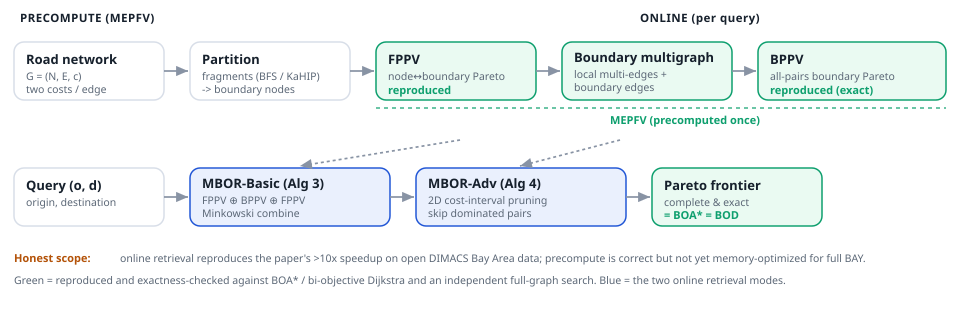

The bi-objective routing problem asks for the full Pareto frontier of paths between two points in a graph whose edges each carry two non-negative costs (for example travel time and energy). The set can be exponential, so compute-on-demand search is slow. MBOR precomputes a boundary multigraph and a Multi-level Encoded Pareto Frontier View (MEPFV), then answers a query by combining a few precomputed Pareto sets, with two-dimensional cost-interval pruning to skip combinations that cannot contribute. This repo is a from-scratch Rust port that reproduces the method on the open 9th DIMACS Bay Area network, plus Triton GPU kernels for the dense sub-steps.

Produced by this repo's Rust (cargo build --release; mbor-bench) on the open DIMACS Bay Area subnetworks, 50 queries each, BFS region-growing partition (k=50). Average per-query online time, min of 3 passes. Exactness mismatches = 0 on every row: MBOR-Basic, MBOR-Adv, BOA*, and bi-objective Dijkstra return the same Pareto frontier.
| Network | nodes | BOA* (ms) | MBOR-Basic (ms) | MBOR-Adv (ms) | Adv vs BOA* | avg solutions |
|---|---|---|---|---|---|---|
| 1/20 BAY | 15,366 | 5.59 | 0.62 | 0.054 | 104× | 15.2 |
| 1/10 BAY | 32,205 | 2.85 | 0.38 | 0.040 | 72× | 5.2 |
| 1/5 BAY | 64,684 | 81.70 | 10.42 | 1.87 | 44× | 47.4 |
Machine: Apple Silicon (local), full table above. On MSI (128-core Linux) the same harness reproduces the ratios on a second machine (1/20 BAY: Adv 93×; 1/10 BAY: Adv 57×); the 1/5 MSI row, KaHIP min-cut-partition rows, and an upstream-C++ cross-check are landing (see EVIDENCE). MBOR-Adv's 2D cost-interval pruning skips 84–99% of boundary-pair combinations. Solution counts match the paper on 1/20 (15.2 vs 15) and 1/5 (47.4 vs 47).
| Component | Status |
|---|---|
| Bi-objective label-setting (Alg 2), Pareto / Minkowski ops | Real, exact, tested |
| MEPFV precompute: FPPV, boundary multigraph, BPPV (Alg 1/5) | Real, parity-checked vs exact full-graph search |
| Online retrieval Basic (Alg 3) + Adv 2DCI pruning (Alg 4) | Real, reproduces paper speedup; 0 exactness mismatches |
| Baselines: BOA*, bi-objective Dijkstra | Real, exact, agree on all pairs |
| Precompute memory at full-BAY scale | Not yet optimized (stores full FPPV) |
| Triton GPU kernels (Minkowski + 2DCI), CPU-vs-A100 | Next (MSI) |
| KaHIP min-cut partition + upstream C++ cross-check | In progress (MSI) |
git clone https://github.com/arunshar/mbor && cd mbor/rust
cargo test # exactness on the paper toy + grids
cargo build --release
bash ../data/fetch_dimacs_bay.sh # vendor open DIMACS Bay Area maps
./target/release/mbor-bench ../data/maps/BAY20-road-d.txt \
../data/queries/BAY20-queries 50 3Full method, code walkthrough, and design rationale in the deep explainer; the rendered paper is on the paper page.